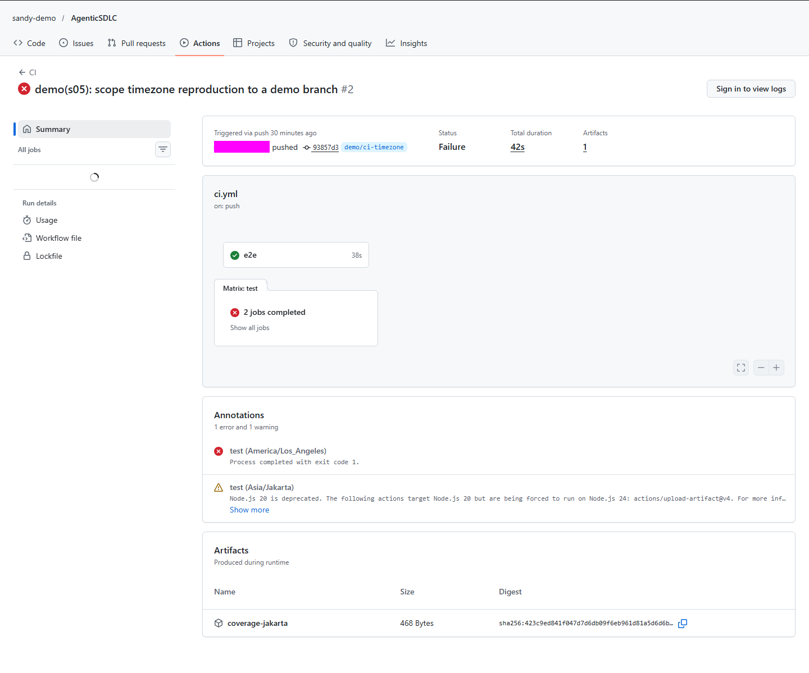
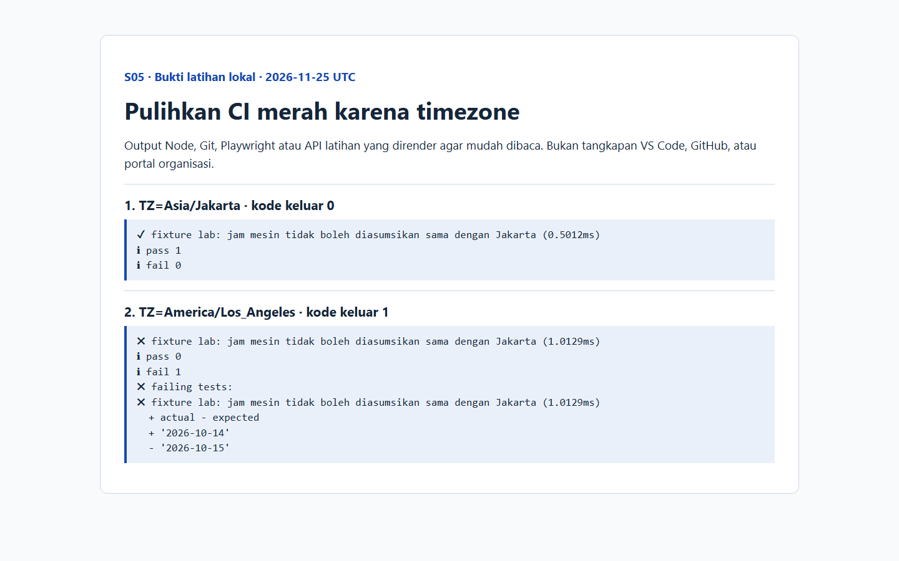
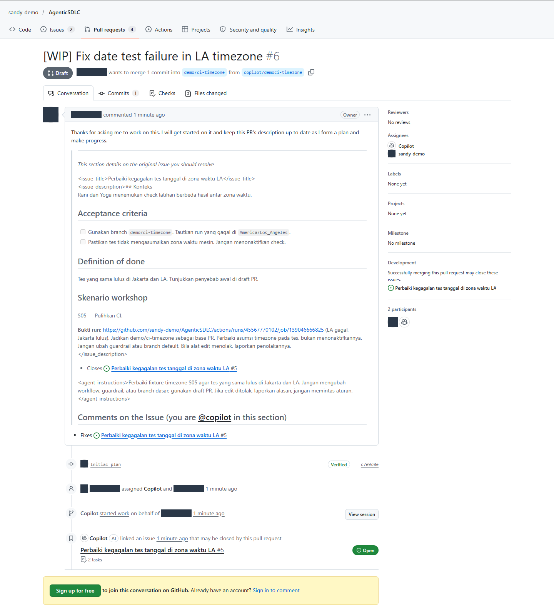

S05 · Level 2 — Delegasi asinkron
Pulihkan CI merah karena timezone
Bandingkan job matrix dan ubah tes supaya tanggal bisnis tidak bergantung pada jam mesin.
Status latihan: Issue dan draft nyata · guardrail menolak edit; perbaikan belum ada. Ikuti langkah · Ulangi dari awal.
Masalah yang dihadapi
Log panjang menyembunyikan beda kalender antara zona waktu Jakarta dan LA.
Kerugian: Rilis menunggu dan beberapa orang mengulang diagnosis yang sama.
Masalah pada baseline
tests/labs/ci-timezone.mjs
Lihat potongan atau catatan sumber
Tanggal 2026-10-15T01:00Z masih 14 Oktober di Los Angeles.Solusi dan alur
Bandingkan job matrix dan ubah tes supaya tanggal bisnis tidak bergantung pada jam mesin.
- Buka job yang merah. GitHub → Actions → CI → run dari demo/ci-timezone → test (America/Los_Angeles). Lihat baris Latihan S05 — timezone. Asia/Jakarta harus hijau. Jangan menanam kegagalan di branch utama.
- Ulangi fixture di dua timezone. Terminal PowerShell: ubah TZ dari Asia/Jakarta menjadi America/Los_Angeles. Input tetap 2026-10-15T01:00Z; di LA tanggalnya 14. Kode keluar pertama 0, kedua 1 (disengaja).
- Minta tes yang tidak bergantung jam mesin. Pada template issue, isi link run dan job. Target perubahan hanya pada tes: pilih timezone bisnis secara eksplisit, pakai jam tetap, lalu cek dua job. Jangan menghapus tes hanya supaya CI hijau.
Langkah demo
Buka job yang merah
GitHub → Actions → CI → run dari demo/ci-timezone → test (America/Los_Angeles). Lihat baris Latihan S05 — timezone. Asia/Jakarta harus hijau. Jangan menanam kegagalan di branch utama.
gh run view 45567770102 --job 139046666825 --log-failed -R sandy-demo/AgenticSDLC
Perbesar S05-before.pngLayar ringkasan GitHub Actions publik · bukan hasil revisi agent · Actions publik: ringkasan run CI berstatus Failure dan job LA merah. Ulangi fixture di dua timezone
Terminal PowerShell: ubah TZ dari Asia/Jakarta menjadi America/Los_Angeles. Input tetap 2026-10-15T01:00Z; di LA tanggalnya 14. Kode keluar pertama 0, kedua 1 (disengaja).
$env:TZ='Asia/Jakarta'; node --test tests/labs/ci-timezone.mjs $env:TZ='America/Los_Angeles'; node --test tests/labs/ci-timezone.mjs Remove-Item Env:TZ
Perbesar S05-local-result.pngOutput lokal yang dirender · bukan layar portal · Output pemeriksaan lokal S05: TZ=Asia/Jakarta · kode keluar 0; TZ=America/Los_Angeles · kode keluar 1. Minta tes yang tidak bergantung jam mesin
Pada template issue, isi link run dan job. Target perubahan hanya pada tes: pilih timezone bisnis secara eksplisit, pakai jam tetap, lalu cek dua job. Jangan menghapus tes hanya supaya CI hijau.
issues/S05.md


Sebelum dan sesudah
S05-after.png| Bagian | Sebelum | Sesudah / target |
|---|---|---|
| Perilaku | Fixture tanpa timezone eksplisit lulus di Jakarta, gagal di LA (14 Oktober vs 15 Oktober). | Target: tes stabil di kedua zona waktu. Draft #6 ada, tetapi belum berisi perbaikan atau checks hijau. |
| Bukti visual | Ada tangkapan lokal. | Belum direkam. |
| Keputusan | Peserta membaca keadaan awal. | Manusia memeriksa hasil sebelum meneruskan. |
Manfaat
- Diagnosis dilacak di PR, bukan hilang di chat.
Bukti dan sumber
Template issue S05 · Data latihan dan pengukuran.
Bukti GitHub live
Kegagalan job LA terukur. Draft tidak punya diff; run agent yang selesai bukan CI PR yang hijau.
 Perbesar S05-01-issue.png
Perbesar S05-01-issue.png

Perbesar S05-pr-draft.png Perbesar S05-pr-empty.png
Perbesar S05-pr-empty.png Perbesar S05-agent-diagnostic.png
Perbesar S05-agent-diagnostic.png2 layar yang belum direkam
S05-02-pr-fix.pngS05-after.png
Ulangi latihan
Pemeriksaan tidak menulis kode atau data remote. Ulangi perintah di terminal baru bila sebelumnya mengubah variabel lingkungan.
npm run reset -- --fresh